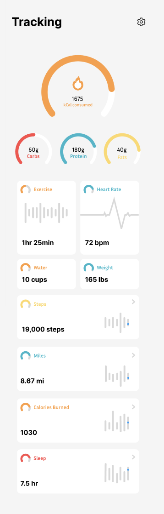
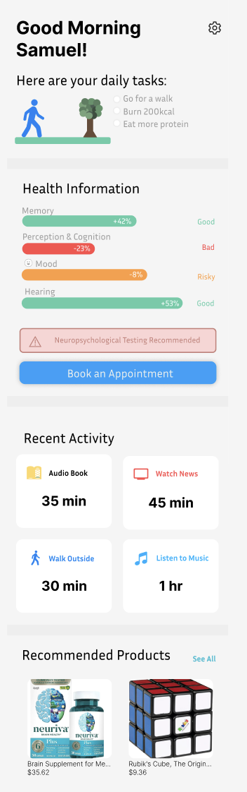

Harmony Health
An AI-powered app to analyze vocal tones and facial expressions, tracking emotional patterns and mental health conditions.


SJFit
A pose estimation app with OpenCV and MediaPipe to improve form detection and provide real-time feedback.